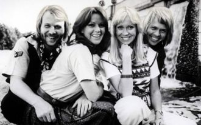

If I had another chance tonight
I'd try to tell you that the things
we had were right
(repeated ad infinitum)Ooh, babyI feel like music sounds better with youLove might bring us back togetherI feel so good
Yeah
[Brian:]You are my fireThe one desireBelieve when I sayI want it that way
You can dance, you can jive, having the time of your lifeSee that girl, watch that scene, diggin' the Dancing Queen

Half past twelveAnd I'm watching the late show in my flat all aloneHow I hate to spend the evening on my ownAutumn winds
He doesn't mean a thing to me,Just another pretty face to see,He's all over town, knockin em down,And I'd never let him next to me,
Tricky time never slows That moment walked me by without bothering to say Lucky time never stops That moment walked me by without bothering to
La la, la la la la la na na na na na,La la na na, la la la la la na na na na na,La la, la la la la la na na na na na,
Your light is inside of meLike a raging roarLike an ocean bornYou're in my veinsYour voice is serenityWhen the Sun goes down
Tell me what you wantWhat you likeIt's okayI'm a little curious tooTell me if it's wrongIf it's rightI don't care
Here she comes againTroubles on her browHere she comes againWith worries she can't hide
Gotta slow up, gotta shake this highGotta take a minute just to ease my mind'Cause if I don't walk then I'll get caught out
Standing in lineTo see the show tonightAnd there's a light onHeavy glowBy the way I tried to sayI'd be there waiting for
Shoot me down and I’ll get up againemotion running high with double meaningjust another day to keep it calm within
See the mirror in your eyesSee the truth behind your liesYour lies are haunting meSee the reason in your eyesGiving answer to the why
Face down in the mirrorMidnight mascara, down her eyeGot a new obsession, perfect lifeMy heart goes boom just a little bit
[Chorus: Robin Thicke]I don't like it, I love it, love it, love it, uh ohSo good it hurtsI don't want it, I gotta, gotta have it, uh oh
[Francesco Yates:]OooooohOooooohOooooohOh baby!OooooohOooooohHeeeey...
I've got fire for a heartI'm not scared of the darkYou've never seen it look so easyI got a river for a soulAnd baby you're a boat
Sha-la-la-laSha-la-la-laSha-la-la-la